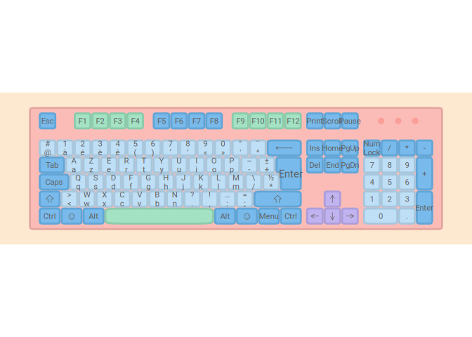
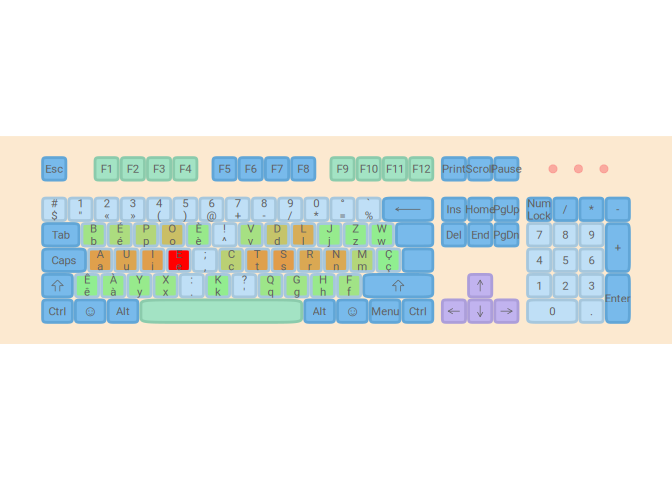
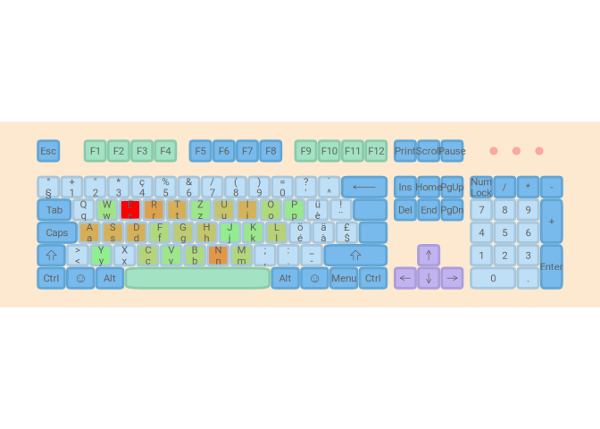

lbkeyboard provides several functions to generate optimized keyboard layouts for Luxembourg; this means that the layout needs to work well with French, German, Luxembourguish and English. These 4 languages are the most used languages in the country, with French being (very likely) the most used language.
Installation
You can install the development version of lbkeyboard from GitHub with:
# install.packages("devtools")
devtools::install_github("b-rodrigues/lbkeyboard")Example
For now, this package only allows you to create a plot of several layouts.
library(lbkeyboard)
## basic example codeHere is the BÉPO layout:
ggkeyboard(keyboard = afnor_bepo, layout = "iso")
and here the AZERTY layout:
ggkeyboard(keyboard = afnor_azerty, layout = "iso")
AZERTY and BÉPO are the layouts used in France; AZERTY is, by a very wide margin, the most used layout in France. BÉPO is an optimized layout for the French layout.
In Luxembourg, the most used layout is the Swiss French (or German, depending on the user’s preferences):
ggkeyboard(keyboard = ch_qwertz, layout = "iso")
It is also possible to generate heatmaps. First, let’s load some French text:
data("french")Then, let’s compute the frequency of the letters:
letter_freq_df <- letter_freq(french)Let’s add the colours:
heatmap_azerty <- heatmapize(afnor_azerty, letter_freq_df)Let’s plot the heatmap:
ggkeyboard(heatmap_azerty)
#> Warning: Removed 1 rows containing non-finite values (stat_ellip).
#> Warning: Removed 6 rows containing non-finite values (stat_ellip).
Let’s compare to the BÉPO layout:
heatmap_bepo <- heatmapize(afnor_bepo, letter_freq_df)
ggkeyboard(heatmap_bepo)
#> Warning: Removed 1 rows containing non-finite values (stat_ellip).
#> Warning: Removed 5 rows containing non-finite values (stat_ellip).
Let’s compare heatmaps for Swiss German (QWERTZ) and BÉPO for the German language:
data("german")
letter_freq_de <- letter_freq(german)
heatmap_qwertz <- heatmapize(ch_qwertz, letter_freq_de)
heatmap_bepo_de <- heatmapize(afnor_bepo, letter_freq_de)
ggkeyboard(heatmap_qwertz)
#> Warning: Removed 1 rows containing non-finite values (stat_ellip).
#> Warning: Removed 4 rows containing non-finite values (stat_ellip).
ggkeyboard(heatmap_bepo_de)
#> Warning: Removed 1 rows containing non-finite values (stat_ellip).
#> Removed 4 rows containing non-finite values (stat_ellip).
Even though BÉPO is originally a layout optimized for the French language, we can see from the heatmap that the most frequently used letters are in the home row, which is not the case for the Swiss German (QWERTZ layout).
Let’s also generate some heatmaps for English:
data("english")
letter_freq_en <- letter_freq(english)
heatmap_qwertz <- heatmapize(ch_qwertz, letter_freq_en)
heatmap_bepo_en <- heatmapize(afnor_bepo, letter_freq_en)
ggkeyboard(heatmap_qwertz)
#> Warning: Removed 1 rows containing non-finite values (stat_ellip).
#> Warning: Removed 3 rows containing non-finite values (stat_ellip).
ggkeyboard(heatmap_bepo_en)
#> Warning: Removed 1 rows containing non-finite values (stat_ellip).
#> Removed 3 rows containing non-finite values (stat_ellip).
Here again, we see that the BÉPO layout seems to fare better than the QWERTZ layout.
Acknowledgment
This package uses some code from my fork of the ggkeyboard package (original package can be found here.